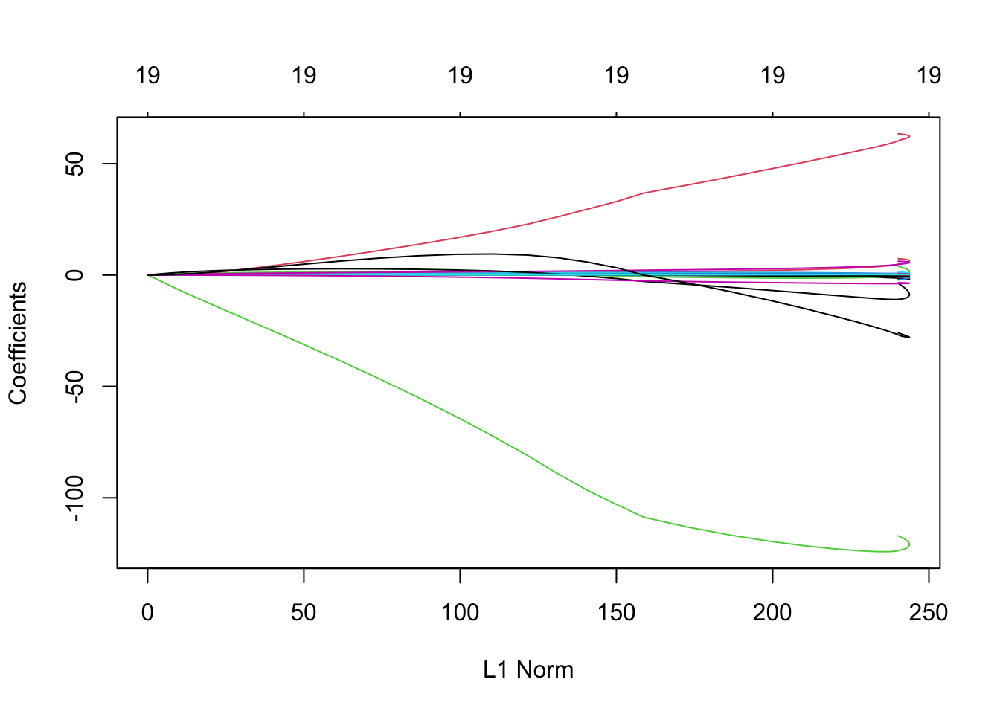
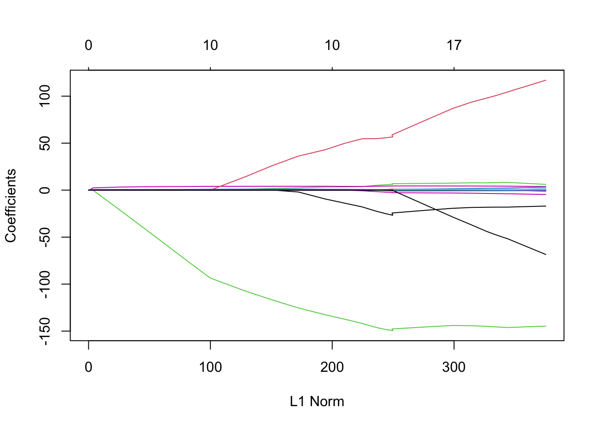
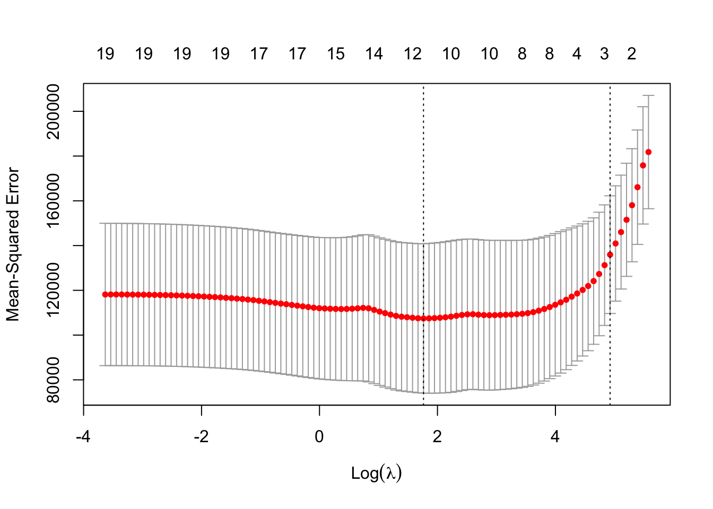

CV_regularization
Hong, Yoon-Ho
2022-09-04
모델의 성능을 평가할 때에는 항상 검증셋(test dataset)을 이용해야 합니다. 학습셋(training set)에서는 항상 더 유연한 모델이 더 정확한 예측 결과를 보여줍니다. 그러나, 훈련셋에서 더 정확한 결과가 검정셋에서의 정확성을 보장해주지는 못합니다. 오히려, 유연한 모델일 수록 검정셋의 noise까지 학습하게 됩니다.즉, 과적합(overfit)하게 되어 분산(variance)이 커지게 됩니다. 우리는 편향-분산 절충(bias-variance trade-off)를 고려하여 적절한 수준의 유연성을 갖는 모델을 선택(model selection)해야 합니다.
검증셋을 이용하여 모델의 성능을 평가하는 방법에는 아래의 세가지가 있습니다.
- Validation set approach
- LOOCV (Leave-one-out cross-validation)
- k-fold CV
auto 데이터셋에서 연비(mpg)를 예측하는 회귀 모델을 만들고, 모델의 성능을 평가해봅시다.
library(dplyr)auto = read.csv("data/auto.csv")
auto = select(auto, -name)
summary(auto)## mpg cylinders displacement horsepower weight
## Min. : 9.00 Min. :3.000 Min. : 68.0 Min. : 46.0 Min. :1613
## 1st Qu.:17.00 1st Qu.:4.000 1st Qu.:105.0 1st Qu.: 75.0 1st Qu.:2225
## Median :22.75 Median :4.000 Median :151.0 Median : 93.5 Median :2804
## Mean :23.45 Mean :5.472 Mean :194.4 Mean :104.5 Mean :2978
## 3rd Qu.:29.00 3rd Qu.:8.000 3rd Qu.:275.8 3rd Qu.:126.0 3rd Qu.:3615
## Max. :46.60 Max. :8.000 Max. :455.0 Max. :230.0 Max. :5140
## acceleration year origin
## Min. : 8.00 Min. :70.00 Min. :1.000
## 1st Qu.:13.78 1st Qu.:73.00 1st Qu.:1.000
## Median :15.50 Median :76.00 Median :1.000
## Mean :15.54 Mean :75.98 Mean :1.577
## 3rd Qu.:17.02 3rd Qu.:79.00 3rd Qu.:2.000
## Max. :24.80 Max. :82.00 Max. :3.000set.seed(1)
train_index = sample(nrow(auto), round(nrow(auto)*2/3))
train_data = auto[train_index, ]
test_data = auto[-train_index, ]
lm.fit = lm(mpg ~ ., data = train_data)
pred = predict(lm.fit, test_data)
obs = test_data$mpg
mse = mean((pred - obs)^2)
sqrt(mse)## [1] 3.116298검정셋 접근법
validation set approach 를 10번 반복해서 rmse의 추정치와 분산을 구해봅시다.
rmse_vs = c()
for (i in 1:10){
train_index = sample(nrow(auto), round(nrow(auto)*2/3), replace = F)
train_data = auto[train_index, ]
test_data = auto[-train_index, ]
lm.fit = lm(mpg ~ ., data = train_data)
pred = predict(lm.fit, test_data)
obs = test_data$mpg
mse = mean((pred - obs)^2)
rmse_vs[i] = sqrt(mse)
}
mean(rmse_vs); var(rmse_vs)## [1] 3.332443## [1] 0.04445261LOOCV
LOOCV를 이용하여 평균제곱오차의 추정치와 분산을 구해보자.
rmse_loocv = c()
for (i in 1:nrow(auto)){
lm.fit = lm(mpg ~ ., data = auto[-i,])
pred = predict(lm.fit, auto[i,])
obs = auto$mpg[i]
mse = (pred - obs)^2
rmse_loocv[i] = sqrt(mse)
}
mean(rmse_loocv); var(rmse_loocv)## [1] 2.556369## [1] 4.848472교차검증법
K-fold CV
rule of thumb: k=5 or 10 (bias-variance trade-off)
library(caret)## Loading required package: ggplot2## Loading required package: latticefolds = createFolds(1:nrow(auto), k=10)
rmse_kcv = c()
for (i in 1:10){
lm.fit = lm(mpg ~ ., data = auto[-folds[[i]],])
pred = predict(lm.fit, auto[folds[[i]],])
obs = auto[folds[[i]],]$mpg
mse = mean((pred - obs)^2)
rmse_kcv[i] = sqrt(mse)
}
mean(rmse_kcv); var(rmse_kcv)## [1] 3.327057## [1] 0.3876995위 세가지 검증 기법을 비교해봅시다.
Validation set approach는 training set이 작아서 bias가 큰 경향이 있고, training vs. test dataset 분할의 임의성으로 인해 예측치의 변동성이 보통 크게 나타납니다. 즉, bias와 variance가 모두 큰 경향이 있습니다.
LOOCV은 training dataset의 크기가 커서 bias를 줄일 수 있고, k-fold CV의 bias는 validation set approach와 LOOCV의 사이에 해당합니다.
분산은 LOOCV 와 k-fold CV 중 어느 것이 더 크게 나타날까요? 예상과 달리 대부분 k-fold CV이 LOOCV 보다 variance가 더 작은 경향이 있습니다. LOOCV는 training dataset이 서로 매우 유사하므로 모델간의 상관 관계가 매우 높습니다. 모델 간의 상관 관계가 높을 수록 variance가 더 크게 나타납니다.
정규화(Regulariziation)
차원의 저주(Curse of dimensionality)
in circumstances of p >> n
using all the features to predict response variable
will face two drawbacks in terms of …
- interpretability
- increase of variance (overfitting)
so, we do
feature selection
- subset selection
- shrinkage (regularization)
- dimension reduction
부분집합 선택(Subset selection)
최상의 부분집합 선택
가능한 모든 경우의 수: \(2^p\)
단계적 선택(stepwise selection)
- 전진(forward)
- 후진(backward) - 하이브리드/혼합(mixed)
전진과 후진에서 새로운 변수를 모델에 추가(전진)하거나 제거(후진)하는 기준으로는 RSS (residual sum of square) 혹은 \(R^2\)를 이용합니다.
- 최적의 모델 선택
- 총 p개의 모델 중에서(각 모델은 1부터 p개의 변수를 갖는) 최적의 모델은 교차 검증 기법을 이용해 검정오차를 직접 추정하거나, 간접적으로 추정합니다 (간접 추정에는 Cp, AIC, BIC, adjusted \(R^2\)를 이용)
혼합 선택법은 변수들이 모델에 순차적으로 추가된다는 점에서는 전진 기법과 비슷하나, 새로운 변수가 추가됨에 따라 기존의 변수들에 대한 p-value 가 커질 수 있는데, 이것이 어떤 임계치보다 커지면 그 변수를 모델에서 제외합니다.
수축(Shrinkage)
Ridge
regression
Lasso
regression
아래 식을 최소로 하는 \(\beta\) 를 추정 (note: shrinkage penalty)
능형회귀(ridge regresssion)
\[RSS + \lambda \sum_{j=1}^{p}
\beta^2_j\]
\(\lambda\): tuning parameter
라소회귀(lasso regression)
\[RSS + \lambda \sum_{j=1}^{p}
|\beta_j|\]
library(glmnet)## Loading required package: Matrix## Loaded glmnet 4.1-3x = model.matrix(Salary~., Hitters)[,-1] # create a design matrix, convert factors to a set of dummy variables, remove intercept term
y = Hitters$Salary lambda 값의 범위를 설정합니다.
grid = 10^seq(10, -2, length = 100) # lambda를 10^10 에서 10^-2 까지 값을 갖도록 설정 ridge.mod = glmnet(x,y,alpha = 0, lambda = grid, standardize = T) # alpha = 0 for ridge regression, alpha = 1 for lasso regression, standardize = TRUE ridge/lasso regression 에서는 변수들이 모두 동일한 scale을 값도록 표준화해주어야 합니다(모든 변수의 표준편차가 1이 되도록 각 변수의 표준편차로 나누어줌).
plot(ridge.mod)
L1 norm \[\sum_{j=1}^{p}|\beta_j|\]
L2 norm
\[\sqrt{\sum_{j=1}^{p}\beta^2_j}\]
능형회귀 계수들은 각 lambda 값별로 coef()로 액세스할 수 있는 행렬에
저장됩니다.
dim(coef(ridge.mod))lambda 값이 클 때 L2 norm은 lambda 값이 작을 때의 L2 norm에 비해 작습니다.
100개의 lambda 값 중 50번째의 L2 norm 을 계산해봅시다.
ridge.mod$lambda[50]## [1] 11497.57coef(ridge.mod)[-1,50] # at 50th lambda, coefficients## AtBat Hits HmRun Runs RBI Walks
## 0.036957182 0.138180344 0.524629976 0.230701523 0.239841459 0.289618741
## Years CAtBat CHits CHmRun CRuns CRBI
## 1.107702929 0.003131815 0.011653637 0.087545670 0.023379882 0.024138320
## CWalks LeagueN DivisionW PutOuts Assists Errors
## 0.025015421 0.085028114 -6.215440973 0.016482577 0.002612988 -0.020502690
## NewLeagueN
## 0.301433531sqrt(sum(coef(ridge.mod)[-1,50]^2)) # L2 norm at 50th lambda ## [1] 6.360612검정셋 기법을 이용해 검정오차를 추정해봅시다.
set.seed(1)
train = sample(nrow(x), nrow(x)/2)
y.test = y[-train]임의로 lamda 값이 4 일때, ridge regression model의 계수 추정치를 구해봅시다.
ridge.mod = glmnet(x[train,], y[train], alpha = 0, lambda = grid)
ridge.pred = predict(ridge.mod, s=4, newx = x[-train,])
mse = mean((ridge.pred-y.test)^2)
sqrt(mse)## [1] 377.1293lamda 값을 매우 큰 모델을 적합하여(10^10) 계수 추정치를 구해봅시다.
ridge.pred = predict(ridge.mod, s=10^10, newx = x[-train,])
mse = mean((ridge.pred-y.test)^2)
sqrt(mse)## [1] 473.9935penalty term을 없앨 때(즉, 최소제곱 적합)의 결과와 비교해봅시다.
ridge.pred = predict(ridge.mod, s=0, newx = x[-train,])
mse = mean((ridge.pred-y.test)^2)
sqrt(mse)## [1] 407.7478임의로 lambda 값을 선택하는 대신에 교차검증을 사용하여 결정하도록 합시다. 즉, 교차검증을 통해 검정오차 추정치가 가장 낮은 lambda 값을 구합니다.
set.seed(1)
cv.ridge = cv.glmnet(x[train,], y[train], alpha = 0, nfolds = 10)
plot(cv.ridge)
bestlambda.ridge = cv.ridge$lambda.min
bestlambda.ridge## [1] 326.0828cv 검정오차 추정치가 가장 낮은 lambda 값에 연관된 검정 MSE를 구해봅시다.
ridge.pred = predict(ridge.mod, s=bestlambda.ridge, newx = x[-train,])
mse = mean((ridge.pred - y.test)^2)
sqrt(mse)## [1] 373.9433마지막으로 교차검증에 의해 선택된 lambda 값을 사용하여 전체 데이터셋에 ridge regression 모델을 적합하고 coefficients 추정치를 구해봅시다.
ridge.out = glmnet(x,y,alpha = 0)
predict(ridge.out, type = "coefficients", s=bestlambda.ridge)## 20 x 1 sparse Matrix of class "dgCMatrix"
## s1
## (Intercept) 15.44383120
## AtBat 0.07715547
## Hits 0.85911582
## HmRun 0.60103106
## Runs 1.06369007
## RBI 0.87936105
## Walks 1.62444617
## Years 1.35254778
## CAtBat 0.01134999
## CHits 0.05746654
## CHmRun 0.40680157
## CRuns 0.11456224
## CRBI 0.12116504
## CWalks 0.05299202
## LeagueN 22.09143197
## DivisionW -79.04032656
## PutOuts 0.16619903
## Assists 0.02941950
## Errors -1.36092945
## NewLeagueN 9.12487765lasso
lasso.mod = glmnet(x[train,], y[train], alpha = 1, lambda = grid)
plot(lasso.mod)## Warning in regularize.values(x, y, ties, missing(ties), na.rm = na.rm):
## collapsing to unique 'x' values
cv.lasso = cv.glmnet(x[train,], y[train], alpha=1)
plot(cv.lasso)
bestlambda.lasso = cv.lasso$lambda.min
lasso.pred = predict(lasso.mod, s=bestlambda.lasso, newx = x[-train,])
mse = mean((lasso.pred - y.test)^2)
sqrt(mse)## [1] 380.0754lasso.out = glmnet(x,y,alpha = 1, lambda = grid)
lasso.coef = predict(lasso.out, type = "coefficients",s=bestlambda.lasso)
lasso.coef## 20 x 1 sparse Matrix of class "dgCMatrix"
## s1
## (Intercept) 48.80107051
## AtBat -0.67774237
## Hits 3.75024484
## HmRun .
## Runs .
## RBI .
## Walks 3.14969177
## Years -4.59912214
## CAtBat .
## CHits .
## CHmRun 0.16726718
## CRuns 0.37005850
## CRBI 0.41962226
## CWalks -0.16768313
## LeagueN 26.82180577
## DivisionW -118.53979587
## PutOuts 0.24922460
## Assists 0.01431651
## Errors -0.72474528
## NewLeagueN .linear regression
lm.fit = lm(Salary~., data = Hitters, subset = train)
lm.pred = predict(lm.fit, newdata = Hitters[-train,])
mse = mean((lm.pred - y.test)^2)
sqrt(mse)## [1] 410.6011